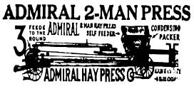
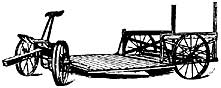

The Old-Time Farm Magazines
An excerpt.
By the Mother Earth News editors
May/June 1977
This page contains excerpts from issues of THE COUNTRY GENTLEMAN dated 1914 and 1915.
Have We Horses for Europe?
Production Has Been on the Increase
by G. E. Wentworth
C ONSTANTLY the question is asked if the United States can spare enough horses for the purposes of the present European war. From 1870 to 1900, the thirty years before the general use of the automobile, the increase in the number of horses was at the rate of 400,000 a year. From 1900 to 1910 the increase in the horse population was at the rate only of 157,000 a year. Between 1910 and 1914 the increase has been at the rate of 282,000 a year.
There is no reason to suppose that as many mares were not bred in 1914 as in the three years preceding. Consequently there must be a crop of at least 300,000 colts this spring, and these will be available for American use within the next four years. Every horse shipper who comes to the Chicago market says that all through the Middle West the farmers are breeding their mares to good stallions, so there will undoubtedly be a double crop of colts for the spring of 1916.
If every horse above the normal number exported during the Boer War went to the front there were consumed in three years an average of 44,000 horses and 25,000 mules a year. There was a great mortality among livestock during the Boer War because of inadequate transport and quartermaster service, the tsetse fly, and the violent change of climate from North Dakota to Southern Africa. Reports of the veterinary department of the British Army show that horses from cold climates which passed through the equatorial regions and then encountered the discomforts of the campaign were short lived.
Mortality Not High
In the present war horses are being shipped from one climate to another as pleasant as their own. The quartermaster service is excellent and the shipping accommodations are of the best. The campaigns are in countries that have been long settled. The horses in France work over paved streets and cultivated fields instead of over deserts and unbroken ground. There will be no tsetse fly, nor will there be great deprivation caused by lack of water and feed, as was the case in South Africa.
There is therefore no reason why the mortality among horses should be great, except at the very front. As all the armies are thoroughly "dug in," the work of the horses is mostly in the moving of guns to and from different fields of action, behind intrenchments. In other words, ordinary draft horses of medium weight are doing draft work in the fields in six and eight horse hitches. Under such conditions the mortality should not be great.
The principal work of the cavalry must be to transport large bodies of troops with great rapidity from one part of the line to another. Their route will also lie behind intrenchments. Cavalry charges are out of the question in the present war.
The French and the English governments have been buying heavily in America to make up their complements. After this has been accomplished, buying will be wholly for remounts and replacements. Both the English and the French will continue to buy all through the war, but not so liberally as during the past six months.
Without handicapping our own horse needs, it will be seen that the United States can easily spare 250,000 horses a year for four or five years. Probably half that number in each year will be all that will be required, and after four years we shall have more horses here than ever before.
During the Boer War breeding operations were carried on extensively, so that in 1905 and 1906 there were more and better horses and a better demand than at any time before or since. This condition will undoubtedly be repeated. Breeding operations this year will be greater than they have been since 1900, and the crop of colts marketed in 1920 and 1921 will be the best in quality, sold at the best prices, in the best markets, up to that date.
The Recipe You Wanted
BROWN BETTY
2 cupfuls of stale bread crumbs
2 tablespoonfuls of butter
3 cupfuls of chopped apples
1/2 cupful of sugar
1/4 teaspoonful of nutmeg teaspoonful of cinnamon
1/2 lemon, juice and rind
1/4 cupful of water
Crumb the bread by grating or rubbing two pieces together. Add crumbs to the melted butter. Butter a pudding dish. Cover bottom of dish with one-fourth the amount of crumbs, and add a layer of chopped apples. Sprinkle with half the amount of sugar and spices, which have all been mixed together. Add another one-fourth the amount of crumbs, then the remaining apples and spices. Pour over this the water, lemon juice and rind. Now put on the top layer of crumbs, which is the remaining half.
Bake in a moderate oven until the apples are very tender and soft, which will be about one hour. Cover during the first half hour.
Rye and Blue Grass for Ewes
THE relative merits of rye and blue grass for ewes suckling lambs have been shown by an experiment with four lots of ewes at the Missouri station. The first lot received rye pasture; the second blue-grass pasture; the third rye and grain; and the fourth blue grass and grain. The grain for both ewes and lambs was a mixture of crushed corn, oats, bran and rape.
It was found that if the ewes were to be kept over it did not pay to feed grain The financial statement, however, showed that it paid well to feed the grain if the ewes were to be marketed with the lambs. Ewes suckling lambs while on pasture alone get very thin, while those receiving grain just about hold their own.
The two kinds of pasture were on the average about equally efficient. When grain was fed blue grass had a decided advantage, but the rye produced better results when no grain was fed. Rye furnishes earlier pasture, but it is not so good as blue grass in June, as it heads and the stems get woody.
Winter-Oats Seeding
ALL over the Southeast and up into the Central States of the Mississippi Valley the winter-oats crop is of steadily increasing importance. Cotton-Belt farmers are finding oats profitable, and northward the crop seems to be growing in favor.
The average yield of winter oats is inexcusably small, for various reasons. Many farmers relegate this crop to their poorest fields, and though oats will make a little something on land that would not produce wheat at all, it is necessary to have good land to produce good oats. The same notion of the ability of oats to stand hardship probably accounts for the fact that the oats land is often carelessly prepared and less fertilizer is used than is thought necessary for wheat. Still another cause of low yields is to be found in poor, smut-infected small-grained seed. Formalin will get rid of the smut, while recleaning will take out most of the chaff and weed seed.
Perhaps the one greatest reason for low yields of oats is too late seeding. On many farms where both oats and wheat are grown it is the practice to leave the oats until all the wheat has been sown. Cotton farmers have imagined that they can handle oats as they would rye and keel) sowing until Christmas. The fact is, oats should always be sown in time to get a good start before cold weather sets in. The oat plant that has made a leaf growth of four or five inches, and has a firm grip on the soil with its roots, is not likely to be heaved out by frost or killed by cold. The very young plant runs considerable risk.
The exact date to sow winter oats depends, of course, upon soil and climate. It varies from early September, or even late August, in the northern part of the Winter-Oats Belt to late October in the lower South. In any case, seeding should be done sufficiently early to give the plants a good hold on the ground before freezing weather comes.
E. E. M.
Havana
Ensilage Harvester
and underlying farm truck-with Auto-Steerage-

The latest and most profitable farm tool
Useful 12 months in the year. Just the thing for the small farm and indispensable on the large one.
Write For Free Booklet and Special Introductory Offer-
Havana Metal Wheel Co.
|
|
|
|
|
 |
 |
|